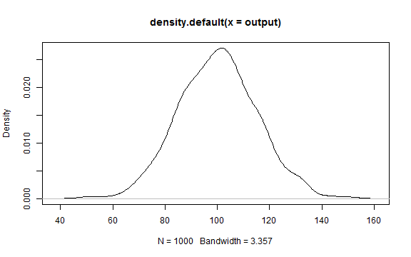

Climate Outcomes
- How much will CO2 emission warm the earth \[ \Delta = ECS/3.7 * 5.35 * ln(CO2_new/CO2_old) \]
- Depends on how much additional CO2 is emitted
- Depends on how sensitive (ECS) the global climate is to CO2
# MBOE -> BBOE -> BTOE -> GTCO2 -> PPMV
oil.co2.f95=253744 / 1000 / 7.3 * 3.07 / 8
oil.co2.f05=1580342 / 1000 / 7.3 * 3.07 / 8
# BCFG -> TCMG -> BTOE -> GTCO2 -> PPMV
gas.co2.f05=12224190 * 0.0283168 / 1000 * 0.9 * 2.35 / 8
gas.co2.f95=1950093 * 0.0283168 / 1000 * 0.9 * 2.35 / 8
gas.co2.mu=(gas.co2.f05+gas.co2.f95)/2
gas.co2.sigma=(gas.co2.f05-gas.co2.f95)/4
oil.co2.mu=(oil.co2.f05+oil.co2.f95)/2
oil.co2.sigma=(oil.co2.f05+oil.co2.f95)/4
# MT COAL -> BT COAL -> BTOE -> GTCO2 -> PPMV
coal.co2.mu=1800000 / 1000 / 2.25 * 3.96 / 8
coal.co2.sigma=900000 / 1000 / 2.25 * 3.96 / 8
x = 0:(coal.co2.mu+2*coal.co2.sigma)
coalcum=pnorm(seq(1,800,by=8),coal.co2.mu,coal.co2.sigma)
gascum=pnorm(seq(1,100,by=1),gas.co2.mu,gas.co2.sigma)
oilcum=pnorm(seq(1,100,by=1),oil.co2.mu,oil.co2.sigma)
coalcum=coalcum*880
gascum=gascum*93
oilcum=oilcum*96
dfcum=data.frame(x=seq(1,100),coalcum,gascum,oilcum)
plot(dfcum$coalcum ~ dfcum$x, type='l', ylim=c(0,1000),
xlab="Percentage of Potential Undiscovered Fuels",ylab="CO2 Emissions in PPMV",col="red")
lines(dfcum$coalcum+dfcum$oilcum ~ dfcum$x, type='l', ylim=c(0,1000), col="green")
lines(dfcum$coalcum+dfcum$oilcum+dfcum$gascum ~ dfcum$x, type='l', ylim=c(0,1000),col="blue")
title(main="Potential CO2 releases from Undiscovered Fuel Sources",
sub="Oil and Gas estimates from USGS; Coal Estimates from Oil and Gas Journal")
legend("topleft", legend=c("Oil","Natural Gas", "Coal"), col=c("blue","green","red"), lty=1, bty='n')

To generate random draws from a normal distribution we use the rnorm function:
output <- rnorm(1000, 100, 15);
The normal distribution has the typical bell shape:
library(ggplot2)
qplot(output)
## stat_bin: binwidth defaulted to range/30. Use 'binwidth = x' to adjust this.

We can perform density estimation on the sample:
plot(density(output))

This little guy had something to do with it